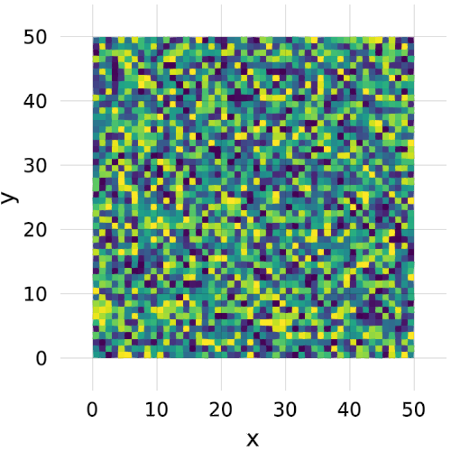
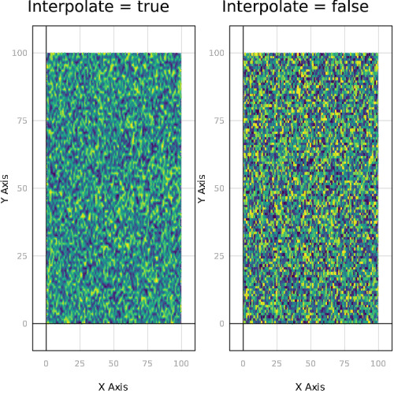
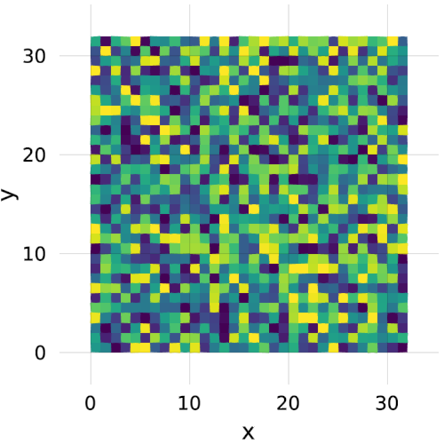

heatmap
Tutorial heatmap
Tags: heatmap, tutorial, tutorials.
using Makie
data = rand(50, 50)
scene = heatmap(data)

Test heatmap + image overlap
Tags: 2d, heatmap, image, transparency.
using Makie
heatmap(rand(32, 32))
image!(map(x->RGBAf0(x,0.5, 0.5, 0.8), rand(32,32)))

heatmap interpolation
Tags: 2d, hbox, heatmap, interpolate, subscene, theme, vbox.
using Makie
using AbstractPlotting: hbox, vbox
data = rand(50, 100)
p1 = heatmap(data, interpolate = true)
p2 = heatmap(data, interpolate = false)
t = Theme(align = (:left, :bottom), raw = true, camera = campixel!)
title1 = text(t, "Interpolate = true")
title2 = text(t, "Interpolate = false")
s = vbox(
hbox(p1, title1),
hbox(p2, title2),
)

Heatmap
Tags: 2d, heatmap.
using Makie
heatmap(rand(32, 32))

3D Contour with 2D contour slices
Tags: 3d, contour, heatmap, transformation, volume.
using Makie
using LinearAlgebra
function test(x, y, z)
xy = [x, y, z]
((xy') * Matrix(I, 3, 3) * xy) / 20
end
x = range(-2pi, stop = 2pi, length = 100)
scene = Scene()
c = contour!(scene, x, x, x, test, levels = 6, alpha = 0.3)[end]
xm, ym, zm = minimum(scene.limits[])
# c[4] == fourth argument of the above plotting command
contour!(scene, x, x, map(v-> v[1, :, :], c[4]), transformation = (:xy, zm), linewidth = 10)
heatmap!(scene, x, x, map(v-> v[:, 1, :], c[4]), transformation = (:xz, ym))
contour!(scene, x, x, map(v-> v[:, :, 1], c[4]), fillrange = true, transformation = (:yz, xm))

Mouse Picking
Tags: heatmap, interaction, interactive, record_events, scatter.
using Makie
img = rand(100, 100)
scene = Scene(resolution = (500, 500))
heatmap!(scene, img, scale_plot = false)
clicks = Node(Point2f0[(0,0)])
on(scene.events.mousebuttons) do buttons
if ispressed(scene, Mouse.left)
pos = to_world(scene, Point2f0(scene.events.mouseposition[]))
push!(clicks, push!(clicks[], pos))
end
return
end
scatter!(scene, clicks, color = :red, marker = '+', markersize = 10)
RecordEvents(scene, "./docs/media/mouse_picking")
Add and change points
Tags: center, heatmap, interaction, ispressed, on, record_events, scatter, to_world.
using Makie
using LinearAlgebra
img = rand(100, 100)
scene = Scene(scale_plot = false, resolution = (500, 500))
heatmap!(scene, img)
clicks = Node(Point2f0[(0, 0)])
blues = Node(Point2f0[])
on(scene.events.mousebuttons) do buttons
if ispressed(scene, Mouse.left)
pos = to_world(scene, Point2f0(scene.events.mouseposition[]))
found = -1
c = clicks[]
for i in 1:length(c)
if norm(pos - c[i]) < 1
found = i
end
end
if found >= 1
blues[] = push!(blues[], pos)
deleteat!(clicks[], found)
else
push!(clicks[], pos)
end
clicks[] = clicks[]
end
return
end
t = Theme(markersize = 10, raw = true)
scatter!(scene, t, clicks, color = :red, marker = '+')
red_clicks = scene[end]
scatter!(scene, t, blues, color = :blue, marker = 'o')
center!(scene)
RecordEvents(scene, "./docs/media/add_and_change_points")
Layouting
Tags: heatmap, layout, lines, scatter, surface, vbox.
using Makie
p1 = scatter(rand(10), markersize = 1)
p2 = lines(rand(10), rand(10))
p3 = surface(0..1, 0..1, rand(100, 100))
p4 = heatmap(rand(100, 100))
x = 0:0.1:10
p5 = lines(0:0.1:10, sin.(x))
pscene = vbox(
hbox(p1, p2),
p3,
hbox(p4, p5, sizes = [0.7, 0.3]),
sizes = [0.2, 0.6, 0.2]
)

Comparing contours, image, surfaces and heatmaps
Tags: contour, heatmap, image, layout, surface, vbox.
using Makie
N = 20
x = LinRange(-0.3, 1, N)
y = LinRange(-1, 0.5, N)
z = x .* y'
hbox(
vbox(
contour(x, y, z, levels = 20, linewidth =3),
contour(x, y, z, levels = 0, linewidth = 0, fillrange = true),
heatmap(x, y, z),
),
vbox(
image(x, y, z, colormap = :viridis),
surface(x, y, fill(0f0, N, N), color = z, shading = false),
image(-0.3..1, -1..0.5, Makie.logo())
)
)